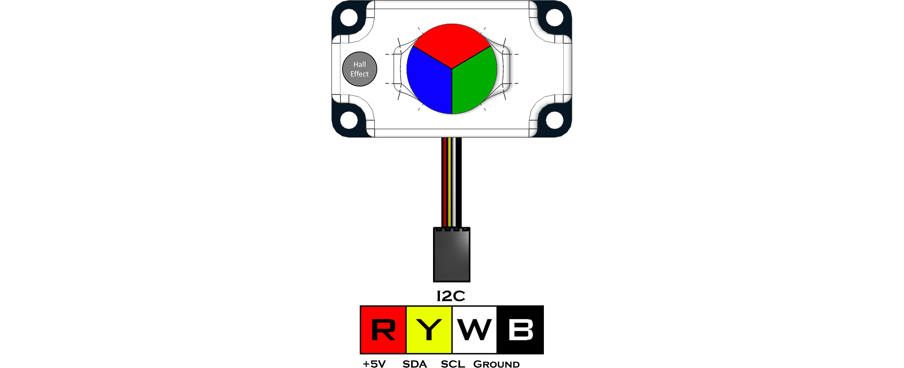
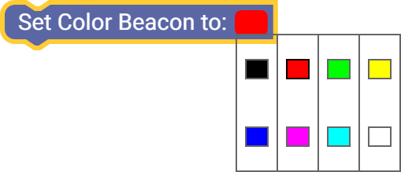
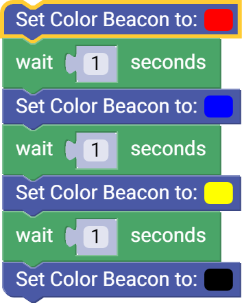
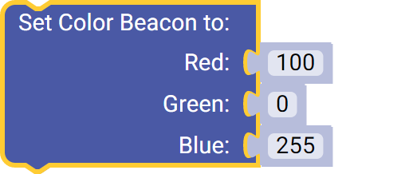
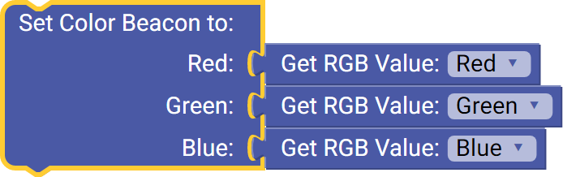

Color Beacon (45-2019)
The Color Beacon is used to display one of seven colors or any set custom color based on RGB values.
The beacon can also indicate Red/Blue team colors with the use of a magnet. There is no code or setup needed to operate as a team indicator. There is a Hall Effect sensor located on the left side of the sensors (wire pointed toward you). By holding a magnet over the top of the sensor it will blink green. After the green blink the beacon will be set to Red, Blue or Off. This can be done at any time and will overwrite any custom color or color number. When the beacon is Red or Blue from the Hall Effect sensor, it will be locked in that mode until turned Off using a magnet or disconnecting the sensor.
- Connect via I2C port.
List of available blocks:

Set Color
Set the color of the Color Beacon to one of the preset colors.
Number | Color |
|---|---|
0 | Off |
1 | Red |
2 | Green |
3 | Yellow |
4 | Blue |
5 | Purple |
6 | Teal |
7 | White |
Block:

Code Produced:
Setup:
beacon = Fusion.colorBeacon(f)Code:
beacon.setColor(1)Example:

Code:
import Fusion import time f = Fusion.driver() beacon = Fusion.colorBeacon(f) beacon.setColor(1) time.sleep(1) beacon.setColor(4) time.sleep(1) beacon.setColor(3) time.sleep(1) beacon.setColor(0)
Set Custom Color
Set a custom color using Red, Green and Blue (RGB) values.
- RGB value ranges from 0 - 255.
- Some online sources may represent the color in hexadecimal (0x00 - 0xFF). Use a hexadecimal to decimal converter to get the appropriate value to enter. You can also use built-in Windows calculator, just change to programmer mode.
Block:

Code Produced:
Setup:
beacon = Fusion.colorBeacon(f)Code:
beacon.setCustomColor(100,0,255)Example:

Setup:
beacon = Fusion.colorBeacon(f) colour = Fusion.color(f)Code:
beacon.setCustomColor(colour.getRGBIndex()[0],colour.getRGBIndex()[1],colour.getRGBIndex()[2])
Questions?
Contact Boxlight Robotics at support@BoxlightRobotics.com with a detailed description of the steps you have taken and observations you have made.
Email Subject: Fusion Blockly Color Beacon